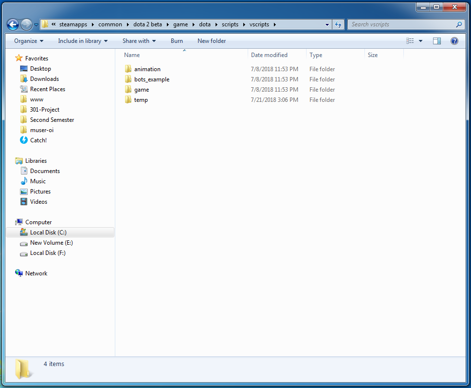
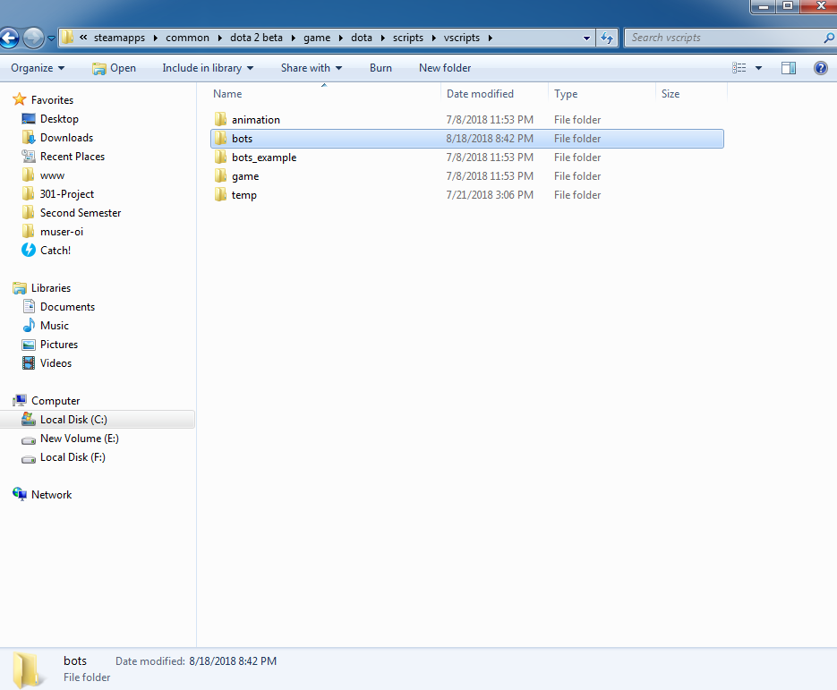
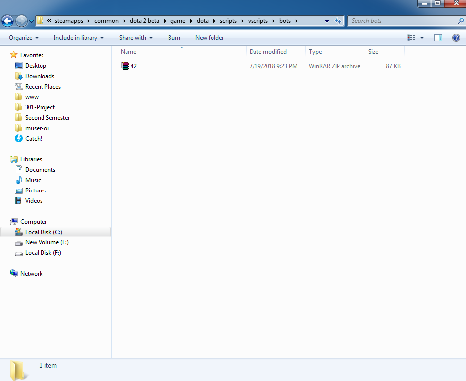
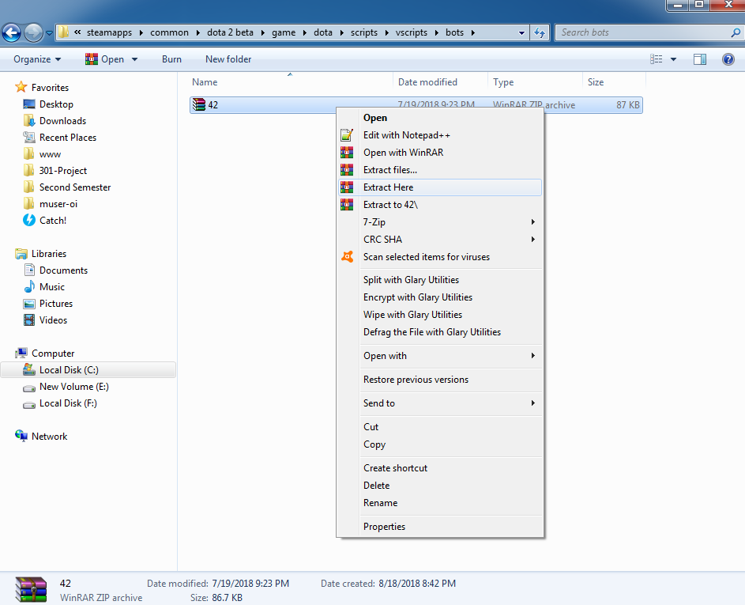
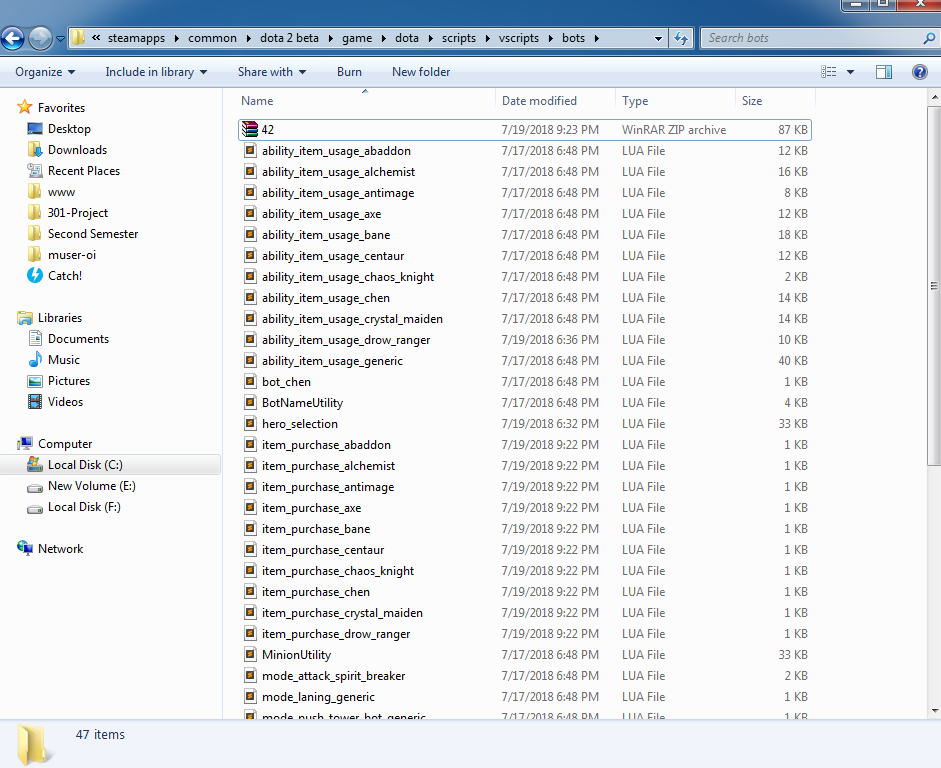

How to upload bot scripts locally
- Generate your code package: Click the generate button of the bot script you configured
- Navigate to your steam directory:
- Windows: “C:\Program Files (x86)\Steam”
- Mac: "Users/<USERNAME>/Library/Application Support/Steam

- Follow the corresponding path: if there is no "bots" folder, then create the folder

- Copy the downloaded zip into the bots folder above

- Extract the zip containing the code into this directory. If you do not have such software, you can download WinRar or 7zip

- It is not essential to delete the zip file, however you may wish to.
At the end of this walkthrough, your directory should look similar to the following:
